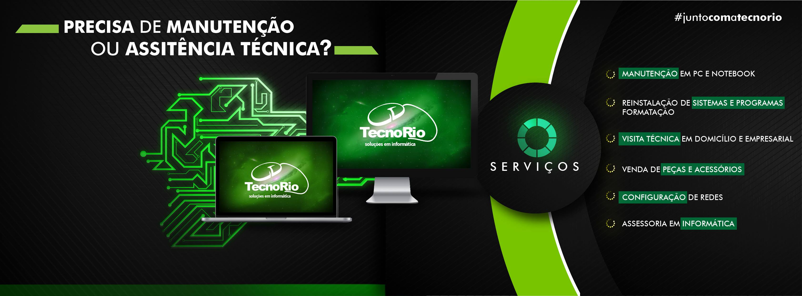

Informatica com atendimento tecnico e comercial
Desde 27/10/2010
Mais de 15 anos atendendo Rio Verde com solucoes em informatica.
Seg a sex 08h-18h
Sabado das 08h as 12h para manutencao, compras e suporte.
Casa e empresa
Suporte tecnico, visita, vendas e servicos para diferentes perfis.
Seu computador pede desempenho. A TecnoRio entrega suporte, pecas e montagem certa.
Em Rio Verde, a TecnoRio une assistencia tecnica, venda de suprimentos e montagem de computadores para quem precisa resolver rapido, comprar com confianca e voltar a produzir sem dor de cabeca.
Montagem gamer e upgrades
Assistencia tecnica
Diagnostico, reparo, limpeza, troca de pecas e manutencao preventiva.
Montagem de computadores
Configuracoes para trabalho, estudo, jogos e uso empresarial.
Suprimentos de informatica
Cartucho, toner, monitor, teclado, webcam, notebook e acessorios.
Atendimento local
Rio Verde e redondezas com suporte para pessoas, casas e empresas.
Servicos que vendem
Solucao tecnica para quem busca conserto, configuracao e desempenho sem enrolacao.
A TecnoRio atende justamente os termos que o cliente procura no Google: assistencia para computadores e informatica, manutencao de notebook, suporte tecnico e PC gamer com montagem confiavel.
Manutencao de PC e notebook
Correcao de falhas, troca de componentes, limpeza interna e recuperacao de desempenho.
Formatacao e remocao de virus
Reinstalacao do sistema, programas essenciais e blindagem inicial para uso mais seguro.
Backup e organizacao digital
Proteja arquivos importantes antes de falhas, trocas de equipamento e reinstalacoes.
Configuracao de redes
Ajuste de conectividade para residencias e ambientes empresariais com mais estabilidade.
Visita tecnica
Suporte em domicilio e empresarial para reduzir a parada e acelerar a solucao.
Servicos rapidos de lan house
Impressao, xerox, segunda via de boletos, digitalizacao e demandas do dia a dia.
Produtos em destaque
Equipamentos e perifericos para completar seu setup ou resolver a urgencia do dia.
A loja trabalha com itens que o publico realmente procura: cartucho, toner, monitor, teclado, webcam, notebook e computador gamer, sempre com apoio tecnico para orientar a compra certa.
Cartucho
Toner
Monitor
Teclado
Webcam
Notebook
Computador gamer
Consultar estoque

TecnoRio em Rio Verde
Loja e suporte tecnico para quem quer comprar melhor e consertar com seguranca.
Sobre a empresa
+15 anos
de experiencia no mercado local
1 unidade
com foco total em Rio Verde e regiao
Atendimento direto
para vendas, consertos e suporte tecnico
Uma loja de informatica fundada em 2010 para resolver tecnologia com linguagem simples e entrega completa.
A TecnoRio Solucoes em Informatica foi estabelecida em Rio Verde, Goias, em 27 de outubro de 2010. Desde entao, atua como ponto especializado em equipamentos, suprimentos de informatica e eletronicos, ao mesmo tempo em que oferece assistencia tecnica para computadores e notebooks.
Entre os servicos estao manutencao de hardware, remocao de virus, formatacao, instalacao de programas e suporte tecnico para diferentes necessidades. A operacao tambem inclui servicos de lan house, como impressao de documentos, fotocopias, segunda via de boletos e digitalizacao.
Por que escolher a TecnoRio
Mais do que vender pecas, a empresa ajuda o cliente a voltar a trabalhar, estudar, imprimir e jogar.
O diferencial esta em unir loja, assistencia tecnica e suporte pratico no mesmo lugar, com identidade forte no nicho de informatica e foco em resultado real para o cliente.
Diagnostico com direcionamento
Atendimento para quem chega sem saber se precisa de reparo, peca nova ou configuracao.
Venda com apoio tecnico
Mais seguranca para escolher monitor, webcam, teclado, notebook e itens de reposicao.
Perfil local e acessivel
Presenca em Rio Verde, WhatsApp ativo e rotina pensada para captar mais clientes e gerar mais vendas.
Area de atendimento
Atendimento em Rio Verde e redondezas para quem nao quer ficar parado por problema de informatica.
Se voce esta procurando assistencia tecnica para computador, manutencao de notebook ou suporte tecnico em Rio Verde GO, a TecnoRio tem estrutura para atender demandas domesticas e empresariais com rapidez.
- Suporte para residencias
- Atendimento para empresas
- Vendas e reposicao de itens de informatica
- Montagem de computadores gamer e profissionais
Pronto para resolver
Falar no WhatsApp
Fale com a TecnoRio e descubra a melhor saida para seu computador, notebook ou projeto gamer.
Contato e localizacao
Loja fisica em Rio Verde com atendimento comercial e tecnico durante a semana e no sabado pela manha.
Endereco
Rua Coronel Vaiano, SN, Residencial Canaa - Rio Verde GO, 75909-651, Brasil
Telefone e WhatsApp
(64) 3613-0969
E-mail
jeffersonbatista39@gmail.com
Horario de funcionamento
Segunda a sexta das 08:00 as 18:00 | Sabado das 08:00 as 12:00